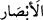

AHİRET YURDUNU DÜŞÜNEN
İHLÂSLI KULLAR
45. (Ey Muhammed!), Kuvvetli ve basîretli kullarımız İbrâhîm, İshâk ve Ya’kûb’u
da an.
46. Biz onları özellikle âhiret yurdunu düşünen ihlâslı kimseler kıldık.
47. Doğrusu onlar bizim katımızda seçkin iyi kimselerdendir.
48. İsmâil’i, Elyesa’yı, Zülkifl’i de an. Hepsi de iyilerdendir.
“(Ey Muhammed!)” bizim özel inâyetimize nâil olmuş “kuvvetli ve basîretli
kullarımız İbrâhîm”i, oğlu “İshâk”ı “ve” oğlu “Ya’kûb’u da an.”
Allah bu zatları kendisine özgü kılmasını, kuvvetli ve basîretli olma özelliklerine
bağlıyor.
“Kuvvetli…” “Kuvvetli” anlamına gelen (
) ifâdesinde geçen (
) kelimesi
aslında mâlum organ “el” anlamındaki ( )’in çoğuludur, fakat burada makamın da
yardımıyla mecâzî olarak “kuvvet” kasdedilmiştir. Çünkü çoğu iş ve amele onun
yardımıyla güç yetirilir. Güç, kuvvet ve kahr onunla hâsıl olur. “Kuvvet” kelimesi, çoğa
da ihtimali olan bir masdar olduğu için çoğul kılınmamaktadır.
“...Ve basîretli…” (
) kelimesi (
)’ın çoğulu olmakla birlikte burada “kalp
gözü” anlamına yorumlanmıştır. Basîret de denebilen bu güç, öyle bir kuvvettir ki kişi,
akledilebilir şeyleri (ma’kûlât) onun sâyesinde algılayabilmektedir.
el-Müfredât’ta der ki: Basar, bakma organı ve bu organın gücü demektir. Kalbin
algılayıcı (müdrike) gücüne “basîret” ve “basar” denir. Fakat bakma organı için basîret
kelimesi nerede ise hiç kullanılmaz. Basar’ın çoğulu “ebsâr”; basîret’in ki ise
“besâir”dir. İfâdenin anlamı şudur: Tâatte güçlü; din işlerinde basîretli…
(
) lafzından, büyük amellerin kasdedilmiş olması da mümkündür. Çünkü çoğu
amel ellerle yapılır. Bu amellerin ellerle yapılanları eller olmaksızın yapılanlara hâkim
kılınarak (tağlîb) böyle bir kullanım ortaya çıkmıştır.
(
) lafzından şerefli ilim ve ma’rifetlerin kasdedilmiş olması da mümkündür.